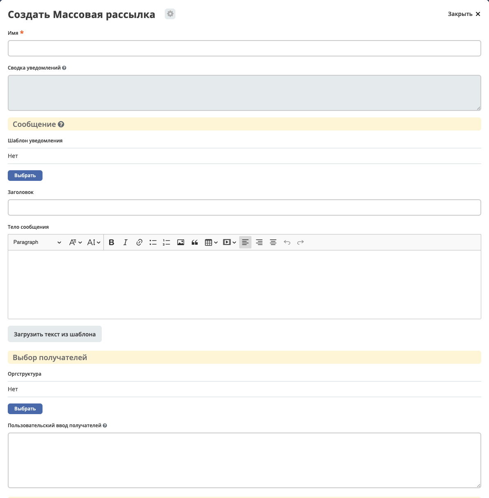
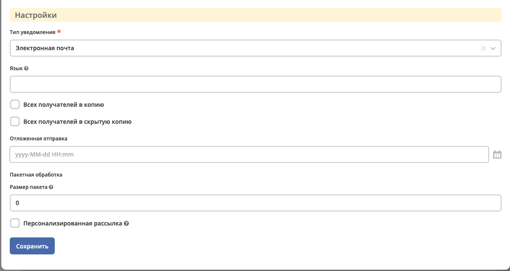
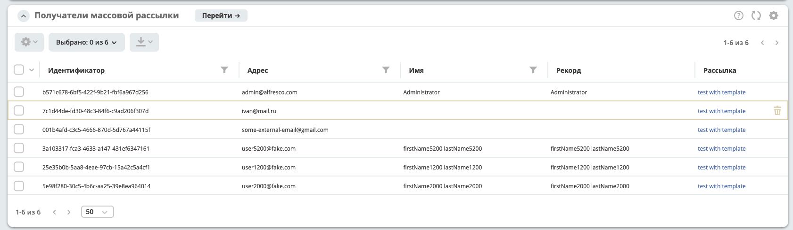
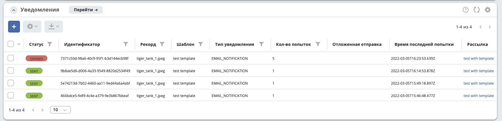

Массовая рассылка
Примечание
Добавлено в версии 2.7.0 микросервиса ecos-notifications
Содержание
1. Общие сведения
Массовая рассылка позволяет отправить уведомления пользователям через конфигурирование сообщений администратором системы.
Данный фунционал может использоваться для системных уведомлений о технических работах, информационных сообщений или любых других рассылок.
Особенности:
отправка уведомлений большому количеству пользователей за счет возможности разбиения получателей на партии
добавление получателей в копию, скрытую копию
отложенная отправка
получение реципиентов из разных источников, редактирование реципиентов до отправки
установление текста уведомлений напрямую
подгрузка текста уведомления из заготовленных шаблонов с последующей корректировкой
отправка уведомлений по шаблону с выбором базового рекорда
просмотр статуса рассылки
Примечание
В массовой рассылке заложена возможность отправки уведомлений через разные провайдеры - email, mobile push, sms и т.д.
На текущий момент реализована только отправка email. В будущем, для поддержки других провайдеров, необходимо реализовать получение разных адресов отправки в зависимоти от типа уведомления.
2. Создание массовой рассылки
Массовые рассылки располагаются в инструментах администратора, блок «Конфигурация уведомлений», журнал «Массовая рассылка».
2.1 Форма
 {kind=link}
{kind=link}
2.2 Описание полей
- Имя
Имя массовой рассылки
- Сводка уведомлений
Сводка по количеству уведомлений в разных статусах, относящихся к текущей рассылки.
- Шаблон уведомления
Отправка уведомления по выбранному шаблону уведомления.
- Record уведомления
Если выбран
шаблон уведомлений, то можно выбрать боазовый recordRef для расчета модели шаблона уведомления.- Заголовок
Прямое установление заголовка уведомления.
- Тело сообщения
Прямое установление тела сообщения через редактор richText.
Примечание
Через кнопку Загрузить текст из шаблона можно подгрузить заголовок и тело сообщения из заготовленного шаблона.
- Оргструктура
Выбор получателей сообщения из компонента оргструктуры. Возможно выбрать конкретных пользователей или группу.
- Пользовательский ввод получателей
Ввод получателей через указание прямого адреса (на данный момент только email) или userName пользователя. Разделители -
,,;,пробел,перевод на строку - \n. Например, данное поле может использоваться для вставки списка получателей копированием из excel.- Тип уведомления
Выбор типа уведомления - email, mobile push, sms и т.д. На данный момент реализован только email.
- Язык
Язык уведомления для выбранного
шаблона уведомления- Всех получателей в копию
Если выбрано, то все получатели будут добавлены в копию (
cc)- Всех получателей в скрытую копию
Если выбрано, то все получатели будут добавлены в скрытую копию (
bcc)- Отложенная отправка
Выбор времени отложенной отправки. Если пусто, то отправка осуществится сразу после действия 3.2.2 Отправить сообщения
- Размер пакета
Размер пакета при разбиении рассылки по получателям.
Например, если размер равен 0, то будет отправлено одно сообщение. Если получателей 10, а размер равен 2, то будет отправлено 5 сообщений.
Эта опция может быть полезна, если почтовый сервер не может обработать отсылку сообщения большому количеству получателей в одном сообщении.- Персонализированная рассылка
Отправка персонализированного сообщения каждому получателю
2.3 Примеры пакетной рассылки
Ниже будут описаны примеры логики обработки пакетной рассылки для более детального понимания.
Предположим, что в рассылке 1_000 получателей, тип уведомления - email, тогда:
При рассылке по умолчанию, без дополнительных настроек, будет отправлено одно сообщение, в котором в поле to будет 1_000 адресов.
Если выбрано Персонализированная рассылка, то будет отправлено 1_000 сообщений, в поле to по одному адресу.
Если здесь же проставить Всех получателей в копию или Всех получателей в скрытую копию, то по одному адресу будет добавлено в cc или bcc соответственно, при этом в to будет пусто.
Если Размер пакета установить 50, то будет отправлено 20 сообщений, в поле to по 50 адресов.
Если здесь же проставить Всех получателей в копию или Всех получателей в скрытую копию, то по 50 адресов будет добавлено в cc или bcc соответственно, при этом в to будет пусто.
Некоторые почтовые серверы плохо орабатывают большое количество писем в одном сообщении. С помощью пакетной обработки можно решить эту проблему.
Например, типичная задача - Отправить информационное сообщение большому количеству пользователей, при этом пользователи не должны видеть других получателей решается установлением размера пакета и флага Всех получателей в скрытую копию.
3. Жизненный цикл массовой рассылки
После создания, массовая рассылка переходит в статус «Новый», на котором можно сформировать получателей, скорректировать их и запланировать отправку.
3.1 Статусы
Статусы устанавиваются в приоритете описания:
- Новый
Массовая рассылка создана.
- Осуществляются попытки отправки
Устанавливается, если хотя бы у одного сообщения при отправке произошла ошибка и осуществляются повторные попытки отправки.
- Ошибка
Устанавливается, если хотя бы у одного сообщения при отправке произошла ошибка, а все повторные попытки или время жизни сообщения были исчерпаны.
- Ожидается отправка
Устанавливается, если хотя бы одно сообщение массовой рассылки находится в статусе «Ожидание отправки».
- Отправлено
Устанавливается, если не найдены кейсы, описанные выше и хотя бы одно сообщение находится в статусе «Отправлено».
3.2 Действия
3.2.1 Сформировать получателей
Выбранные получатели на форме массовой рассылки являются заготовкой для формирования конечного списка получателей.
По умолчанию, на форме есть возможноть выбрать получателей из компонента оргструктуры и ручного ввода (см. 2.2 Описание полей).
При этом, заложена возможность получить дополнительных рецепиентов из кастомного источника. (см. 4. Дополнительные источники формирования получателей)
При выполнении действия «Формирование получателей» происходит сбор получателей из разных источников и формирование уникальных рецепиентов по адресу. В результате можно посмотреть и скорректировать список сформированных получателей в журнале «Получатели»:
Журнал получателей поддерживает удаление и простой текстовый поиск через ИЛИ.
Примечание
При каждом запуске действия «Сформировать получателей» происходит удаление старых получателей и формирование новых.
3.2.2 Отправить сообщения
При выполнении действия «Отправить сообщения» происходит отправка сообщений, согласно указанным настройкам, получателям из сформированного списка - журнала «Получатели».
В результате действия будут сформированны уведомления в журнале «Уведомления» (см. Описание уведомлений), в котором можно посомтреть информацию о сформированных сообщениях и так же их статус.
{kind=link}
Пользователи, у которых установлен атрибут ecos:isPersonDisabled = true, отфильтровываются, и email сообщения им не отправляются. Актуально для версий: ecos-com:4.9.15, ecos-com:4.11.4 и ecos-com:4.15.0+
4. Дополнительные источники формирования получателей
Получение дополнительных получателей осуществляется через records dao, который при queryOne запросе атрибута recipients[]?json, должен вернуть список объектов в формате:
data class RecipientInfo(
@AttName("address")
var address: String? = "",
@AttName(".disp")
var disp: String? = "",
@AttName("record")
var record: RecordRef? = RecordRef.EMPTY
)
val query = RecordsQuery.Builder()
.withQuery(bulkMail.recipientsData.custom)
.withSourceId(provider)
.withMaxItems(1)
.build()
recordsService.queryOne(query, "recipients[]?json").asList(RecipientInfo::class.java)
Перечисление recods источников устанавливается через ecos config c id - bulk-mail-custom-recipients-providers.
id: bulk-mail-custom-recipients-providers
value:
- notifications/custom-fixed-recipients
- notifications/custom-mail-recipients
Указанному источнику, для вычисления получателей, можно передать необходимую информацию в query. Информация, передаваемая в query берется из bulkMailRecord.recipientsData.custom, где custom это ObjectData.
Например, объект custom можно заполнить на переопределенной форме bulk mail, внутри контейнера recipientsData, создав вложенынй контейнер custom. Таким образом, все, что будет заполнено внутри custom, будет передано в query объекте, источнику records.
В итоге, при формировании получателей, будет вызван records api метод queryOne с переданным query, для каждого указанного источника в конфиге bulk-mail-custom-recipients-providers.